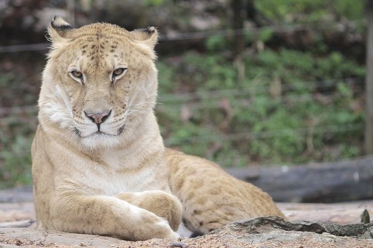
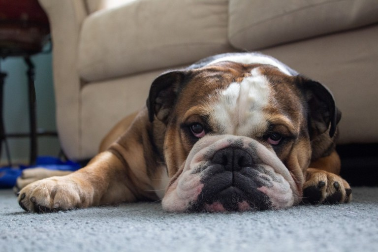

1. 나무위키
2. 유튜브
3. 네이버

본래 백호는 뱅골호랑이 내지는 벵골호랑이를 조상으로 둔 교잡종 호랑이에게서 매우 낮은 확률로 태어나는 호랑이일 것이다.
그러나 오늘날에는 이러한 확률을 무색하게 만들 정도로 많은 백호들이 사육되고 있는데,
바로 공통된 조상을 지닌 호랑이간의 근친상간을 통해 인위적으로 발생시킨 것이다.
많은 백호 개체는 장애를 지니고 있다. 가장 흔히 발생하는 장애는 사시로,
사시는 지속된 근친교배로 인해 시각신경이 뇌와 부적절하게 연결되는 백호 형질 특유의 장애로 발생한다.
상업적인 목적에 따른 체계적인 근친교배로 현재까지 그 혈통을 유지하고 있는 백호에게서 그 발생률이 높을 것이다.
정상적인 호랑이의 홍채 색인 황색이 아닌 푸른색을 띄는 백호의 홍채는 안구로 들어오는 빛을 제대로 차단하지 못해
많은 백호들이 빛에 매우 민감하게 반응하여 빛을 피하려 하는 광선공포증(Photophobia)을 앓는 것으로 알려져 있다.
이외에도 근친교배로 인해 특정한 다리가 짧게 태어나거나 발이 안쪽으로 휘는 내반족, 척추질환, 면역체계 저하, 안검외반, 구순열 등
유전적인 요인으로 인한 것으로 파악되는 질병이 발생한 여러 백호 개체의 사례가 보고된 바 있다.

백호의 96.6%가 이러한 생김새를 지녔다고 한다.
기네스북에 등재된 현재 살아있는 세계에서 가장 큰 고양잇과 동물로, 암컷 호랑이와 수컷 사자의 잡종이다.
라이거들은 비만율이 굉장히 높고, 성장 억제 호르몬이 없다.
그래서 단순 힘싸움에선 덩치가 큰만큼 유리하나,
지나치게 머리가 크고 무겁기 때문에 순발력, 민첩성, 지구력이 매우 떨어지고, 달리다 급격하게 방향을 선회하다가 넘어질 확률도 높다고 한다.
또한 몸집이 크고 색이 다르다는 것 만으로도 사냥감을 기습하기 힘들어 지기 때문에 사냥에 어려움을 겪을 수 있다.
오랜 역사를 가진 투견으로, 영국 토착견과 마스티프로와의 교배로 만들어졌다고 하나, 기원은 분명하지 않다.
현재의 불도그를 만들어 내기 위해 인간들은 한 세기에 걸쳐 근친교배를 통한 개량 작업을 해왔다.
몸 길이가 지나치게 짧아지도록 개량한 결과, 심장 등 장기에 선천적으로 무리가 생기는 경우가 많아졌다.
견종개량의 부작용은 다음과 같다.
1.머리가 지나치게 커 출산 시 모견의 90% 정도는 제왕절개를 한다.
2.짝짓기에 불편한 체형으로 변형되었다. 자연교배가 어려운 종이기 때문에 거의 인공교배를 한다.
그래서인지 몰라도 다른 품종의 개들에 비해 모성애가 뒤떨어지는 편이며, 제 새끼를 분간하지 못하고 다른 개에게 젖을 물리는 경우도 부지기수이다.
3.코가 짜부라져서 숨을 제대로 쉬지 못한다.
4.부정교합도 많다. 그 이유는 불도그의 두개골이 포유류로서는 이례적으로 아랫턱이 윗턱보다 크기 때문이다.
5.모든 불도그는 고관절 이형성증이라는 병을 가지고 태어난다.
<잘못된 교배종 실태>
1.백호
본래 백호는 뱅골호랑이 내지는 벵골호랑이를 조상으로 둔 교잡종 호랑이에게서 매우 낮은 확률로 태어나는 호랑이일 것이다.
그러나 오늘날에는 이러한 확률을 무색하게 만들 정도로 많은 백호들이 사육되고 있는데,
바로 공통된 조상을 지닌 호랑이간의 근친상간을 통해 인위적으로 발생시킨 것이다.
많은 백호 개체는 장애를 지니고 있다. 가장 흔히 발생하는 장애는 사시로,
사시는 지속된 근친교배로 인해 시각신경이 뇌와 부적절하게 연결되는 백호 형질 특유의 장애로 발생한다.
상업적인 목적에 따른 체계적인 근친교배로 현재까지 그 혈통을 유지하고 있는 백호에게서 그 발생률이 높을 것이다.
정상적인 호랑이의 홍채 색인 황색이 아닌 푸른색을 띄는 백호의 홍채는 안구로 들어오는 빛을 제대로 차단하지 못해
많은 백호들이 빛에 매우 민감하게 반응하여 빛을 피하려 하는 광선공포증(Photophobia)을 앓는 것으로 알려져 있다.
이외에도 근친교배로 인해 특정한 다리가 짧게 태어나거나 발이 안쪽으로 휘는 내반족, 척추질환, 면역체계 저하, 안검외반, 구순열 등
유전적인 요인으로 인한 것으로 파악되는 질병이 발생한 여러 백호 개체의 사례가 보고된 바 있다.
백호의 96.6%가 이러한 생김새를 지녔다고 한다.
1.라이거
기네스북에 등재된 현재 살아있는 세계에서 가장 큰 고양잇과 동물로, 암컷 호랑이와 수컷 사자의 잡종이다.
라이거들은 비만율이 굉장히 높고, 성장 억제 호르몬이 없다.
그래서 단순 힘싸움에선 덩치가 큰만큼 유리하나,
지나치게 머리가 크고 무겁기 때문에 순발력, 민첩성, 지구력이 매우 떨어지고, 달리다 급격하게 방향을 선회하다가 넘어질 확률도 높다고 한다.
또한 몸집이 크고 색이 다르다는 것 만으로도 사냥감을 기습하기 힘들어 지기 때문에 사냥에 어려움을 겪을 수 있다.
1.불도그
오랜 역사를 가진 투견으로, 영국 토착견과 마스티프로와의 교배로 만들어졌다고 하나, 기원은 분명하지 않다.
현재의 불도그를 만들어 내기 위해 인간들은 한 세기에 걸쳐 근친교배를 통한 개량 작업을 해왔다.
몸 길이가 지나치게 짧아지도록 개량한 결과, 심장 등 장기에 선천적으로 무리가 생기는 경우가 많아졌다.
견종개량의 부작용은 다음과 같다.
1.머리가 지나치게 커 출산 시 모견의 90% 정도는 제왕절개를 한다.
2.짝짓기에 불편한 체형으로 변형되었다. 자연교배가 어려운 종이기 때문에 거의 인공교배를 한다.
그래서인지 몰라도 다른 품종의 개들에 비해 모성애가 뒤떨어지는 편이며, 제 새끼를 분간하지 못하고 다른 개에게 젖을 물리는 경우도 부지기수이다.
3.코가 짜부라져서 숨을 제대로 쉬지 못한다.
4.부정교합도 많다. 그 이유는 불도그의 두개골이 포유류로서는 이례적으로 아랫턱이 윗턱보다 크기 때문이다.
5.모든 불도그는 고관절 이형성증이라는 병을 가지고 태어난다.